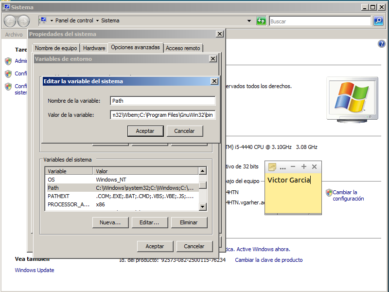

- Módulo: Administración de Sistemas Operativos
- Título del trabajo Generar usuarios
- Componentes del grupo: Victor Garcia
- Curso Académico: 2014/2015
Comenzamos la instalacion de gAWK

- Lo primero que haremos sera promocionar nuestro servidor a Controlador de dominio de Active Directory.
- Añadiremos la ruta de la carpeta de instalacion de gAWK para poder ejecutarlo desde cualquier ruta

- Nos descargaremos el archivo XCACLS.vbs y lo descomprimiremos en C:\Windows.
- Modificaremos la funcion de IsOSSupported, añadiendo --> ,"6.0","6.1" , a las versiones soportadas
- Con este comando cambiaremos el interprete de scripts de windows de wscript a cscript
- Ejecutamos XCACLS con el nuevo interprete y comprobamos que podemos ejecutarlo, viendo permisos ntfs de una carpeta
- Empezamos a crear los scripts, aqui el usuarios.csv

- El archivo Alta.awk
- Ejecutamos este comando y se creara el archivo, crear.bat

- Y tiene esta pinta
- Finalmente si esta correcto el archivo crear.bat, lo ejecutamos desde la consola, y nos creara los usuarios dentro de sus unidades organizativas, y creara sus carpetas en C:\Datos\
- Aqui veremos todos los usuarios creados, sus carpetas y sus propiedades